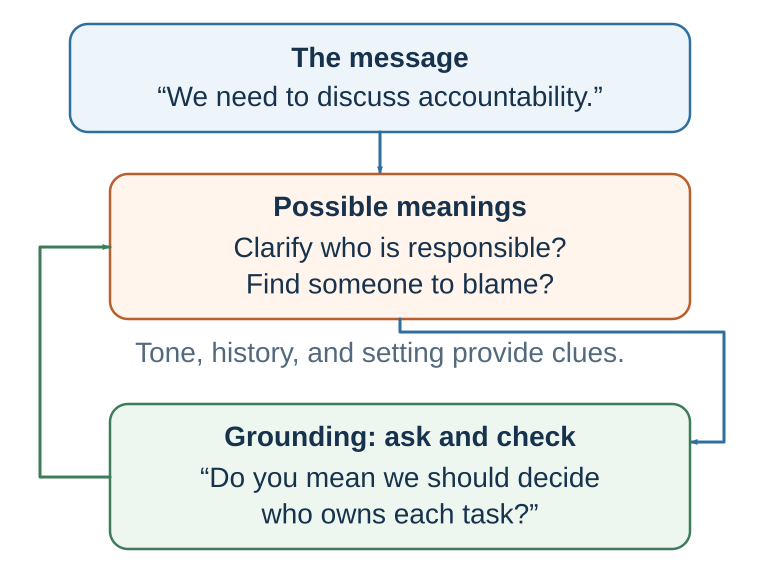
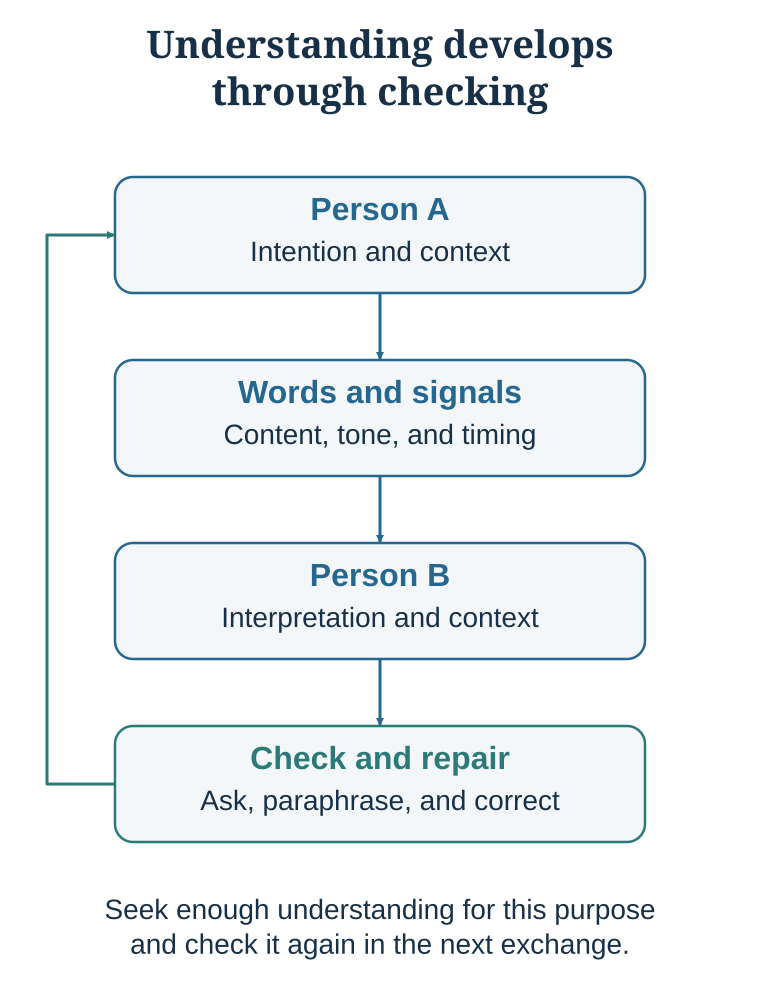
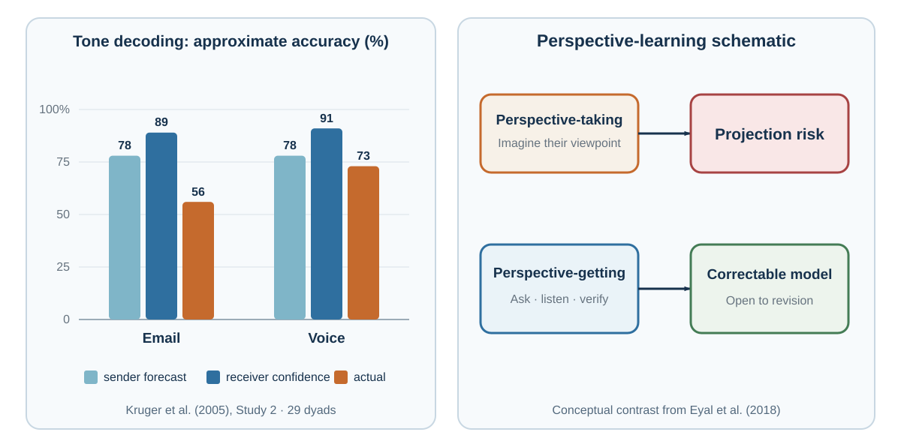

33 Communication: Language Is Not a File Transfer
Words are the visible tip; context and relationship do the hidden work
“Words, in their primary or immediate signification, stand for nothing but the ideas in the mind of him that uses them.”
— John Locke, An Essay Concerning Human Understanding, 1690, Book III, ch. II, §2
Learning goals
- Map how the same utterance can produce different interpretations.
- Use grounding and perspective-getting to test a social inference.
- Redesign a high-stakes message so its intent, context, action, and repair path are recoverable.
Begin with a failed email
The previous chapter designed a message from the speaker’s side. Communication begins when that message meets another person’s model.
After a project deadline slips, a manager writes: “We need to discuss accountability. Please come prepared tomorrow.” The manager intends urgency and clearer ownership. One employee reads blame. Another expects layoffs. A third assumes the sentence targets someone else. The next meeting begins defensively before anyone has spoken.
The words were transmitted perfectly. Meaning was not. Each reader combined the sentence with a different history, power relationship, expectation, and fear. Communication therefore cannot be understood as placing a complete meaning into a message and sending it intact. It is joint inference under incomplete information.
Meaning is inferred, tested, and repaired

Language turns an intention into a public signal, but meaning is not simply a submerged object with a fixed size that the listener retrieves. The listener infers a working interpretation from words, tone, relationship, history, power, culture, local context, and beliefs about what both parties know. The speaker can then respond to that interpretation, so meaning is partly jointly constructed through grounding and repair. The same “Fine. Let’s discuss this tomorrow” could signal genuine agreement, irritation, overload, caution, a wish to de-escalate, or a threat. Interpretation feels immediate even when the evidence permits several stories.
The design goal is therefore recoverability, not perfect transmission. A recoverable message supplies enough context, makes intent and relational stance visible, names the next action, and invites correction: “I am too tired to give this a fair hearing tonight. I am not dismissing the concern. Could we discuss it at 09:00 tomorrow? If I have misunderstood what is urgent, tell me now.” The message cannot eliminate ambiguity, but it gives the other person a path to repair it.
Communication is coordination and repair

The transmission model of communication is associated with Shannon and Weaver’s mathematical theory of communication (Shannon & Weaver, 1949). In that model, a sender transmits a signal through a channel to a receiver, and noise can interfere. This model is powerful for engineering problems. But human communication is not only signal transmission. It is meaning-making.
Suppose a manager says, “We need to improve accountability.” One employee hears, “We need clearer ownership.” Another hears, “Management is preparing to blame us.” A third hears, “We are finally addressing free riding.” A fourth hears, “They do not trust us.” The words are the same. The meaning is not.
This is because people interpret messages through prior experiences, expectations, identity, culture, power, and emotional state. Communication happens not only between mouths and ears, but between models of the world.
Herbert Clark’s work emphasizes common ground: the shared knowledge, assumptions, and context that speakers use to understand one another (Clark, 1996). Communication requires people to coordinate on what they both know, what they assume, and what has already been established. Clark and Brennan (1991) describe grounding as the process of establishing that people have understood each other well enough for the current purpose.
Grounding is why conversation includes signals such as “yes,” “I see,” “wait,” “what do you mean?,” “so you are saying…,” nods, pauses, repetition, examples, and repair. These are not meaningless fillers. They are coordination devices. They help participants check whether meaning is shared.
Grice’s cooperative principle also helps explain communication. Grice (1975) argued that conversation is guided by expectations that speakers provide information that is relevant, truthful, sufficiently informative, and clear. Much meaning comes from these expectations. If someone says, “Some of the students passed,” listeners may infer that not all passed, even though the sentence does not logically say that. If someone asks, “Can you pass the salt?” the literal answer may be “yes,” but the intended meaning is a request.
Human communication depends heavily on implication. People often say less than they mean because they expect listeners to infer. This makes communication efficient, but also fragile. Misunderstanding happens when people do not share the same assumptions.
This is especially clear in email and text communication. Kruger and colleagues (2005) found that people overestimate how well they can communicate tone over email. In one study, senders expected roughly 78% accuracy, receivers expected roughly 90%, yet actual email accuracy was only 56%; adding voice raised actual accuracy to 73.1% but did not eliminate error. The exact numbers belong to that task, not to every message. The portable lesson is the gap: both sides can feel confident while reconstructing different tones. The sender thinks, “How could they not understand?” The receiver thinks, “How could they write such a thing?”

The left panel is not a general ranking of communication channels; it is a calibration result from one sarcasm task. The right panel states the transferable response: use richer evidence when stakes rise, and let the other person correct the model you have formed (Eyal et al., 2018).
| If a message is easy to misread, add… | Example |
|---|---|
| Context | “I am writing after today’s deadline changed.” |
| Intent | “My aim is to clarify ownership, not assign blame.” |
| Relational stance | “I value the work and want us to solve this together.” |
| Next action | “Please mark the two dates you can meet.” |
| Repair invitation | “If this lands differently from how I intend, call me.” |
The manager’s email can now be rewritten: “Yesterday’s delay exposed two handoffs without clear owners. My aim is to repair the workflow, not assign blame. Before tomorrow’s meeting, please mark where you believed ownership changed and one constraint I may not see. We will compare the maps, agree on the next handoff, and record unresolved concerns. If you read this as a performance warning, please tell me; that is not the purpose of this meeting.” The revision does not guarantee trust. It makes the intended model, evidence request, next action, and correction path visible.
Good communicators do not assume understanding. They check it.
Useful questions include:
What do you understand this to mean? What part is unclear? What assumptions are we making? Can you say back what you think I am proposing? What concern would make this difficult for you? What does this word mean in your context? What would this look like in practice?
Communication improves when people treat understanding as a joint task, not a private achievement.
| Failure | Hidden source | Repair move |
|---|---|---|
| Same word, different meaning | Different assumptions or professional models. | Ask for an example and define the term in use. |
| Tone is misread | Text removes vocal and contextual cues. | State intent explicitly and check interpretation. |
| Mind-reading hardens | An inference is treated as fact. | Name it as a hypothesis and ask the person. |
| Agreement is assumed | Silence is interpreted as consent. | Invite a summary, private response, or explicit concern. |
| Perspective-taking projects the self | We imagine what we would feel. | Use perspective-getting: ask, listen, and verify. |
Mind-reading is a hypothesis
Humans constantly infer hidden mental states.
What did she mean? Is he angry? Do they respect me? Will they accept my proposal? Are they interested in talking? Did I offend them? Do they like me? Are they hiding something?
This ability is sometimes called theory of mind or mentalizing. It is essential for social life. Without it, we could not cooperate, teach, negotiate, comfort, deceive, forgive, or build relationships. But our mind-reading is imperfect. We are often overconfident and self-centered when inferring others’ inner worlds.
Familiarity helps, but it does not turn inference into telepathy. In a study of romantic couples, partners predicted each other’s judgments of self-worth, abilities, and preferences better than chance, yet expected substantially greater accuracy than they achieved (Eyal & Epley, 2010). Calibration depends on the target, cue, relationship, context, and mental state being judged. The aim is not permanent doubt; it is confidence proportional to evidence.
One major error is egocentric projection: anchoring on one’s own perspective and insufficiently adjusting to another person’s perspective (Epley et al., 2004). We assume that our model of the world is closer to theirs than it really is. “I would not be offended by this feedback, so she should not be offended.” “I understood the email, so they should understand it.” “I enjoy this kind of small talk, so they must too.” “I would want direct advice, so they must want it.”
Diamond and Kirkham (2005) showed that adults, like children, can initially be pulled by their own perspective; the difference is often how quickly adults correct the egocentric error. Under pressure, distraction, or emotion, correction becomes harder.
A related error is the false consensus effect: people overestimate how common their own beliefs, preferences, choices, and behaviors are (Ross et al., 1977). If I think an action is ethical, I may assume most reasonable people agree. If I dislike a policy, I may assume most people secretly dislike it too. If I would accept a risk, I may assume others would. False consensus is a population-level version of egocentric projection.
Keep the levels distinct. Egocentric projection is the inferential process by which my own state anchors a judgment about your state; false consensus is one possible population judgment about how widely a view is shared. Both imply a useful diagnostic: my judgment of another person contains information about them, but also about the values, expectations, experiences, and concerns through which I interpreted them.
Kruger and Gilovich (1999) showed that people can also be egocentric in responsibility judgments. In shared tasks, spouses and collaborators often overclaim responsibility for both positive and negative activities because their own contributions are more salient to them. Each person remembers what they did and underestimates invisible contributions by others.
Another error is the illusion of transparency: people overestimate how visible their internal states are to others (Gilovich et al., 1998). We think our anxiety, gratitude, embarrassment, confusion, or affection is obvious. It often is not. A student assumes the teacher can see they are confused. A manager assumes employees know they appreciate their effort. A friend assumes their hurt feelings are visible. A negotiator assumes the other side can see their constraint. Much conflict arises because people expect others to read emotions that have not been expressed.
The counterpart is the illusion of understanding: overestimating how much of the context in our own mind survived in the message. Likewise, faces, bodies, and brief behavioral samples can contain information without becoming reliable dictionaries of a person’s exact emotion, motive, or truthfulness (Ambady & Rosenthal, 1993; Barrett et al., 2019; DePaulo et al., 2003). Verbal information and direct questions are often more diagnostic than confident interpretation of isolated expressions (Gesn & Ickes, 1999; Hall & Schmid Mast, 2007). If something is important, do not rely on hints, microexpressions, or silence. State it, ask, and verify.
The practical lesson is simple:
Treat your interpretation of another person’s mind as a hypothesis, not a fact.
This principle is one of the most important in communication. “She is not interested,” “He is disrespecting me,” “They are hiding something,” “The students do not care,” “The client is unreasonable”—each may be true, but each is first a hypothesis. Good communication tests hypotheses before defending them.
Ask rather than merely imagine
Because mind-reading is inaccurate, communication requires a better method.
Perspective-taking means trying to imagine another person’s perspective. It is useful, but limited. We often imagine what we would feel in their situation rather than what they actually feel. We project our own values, fears, and assumptions.
Perspective-getting means asking and listening.
Eyal, Steffel, and Epley (2018) found that people were often more accurate when they asked others for their perspective than when they merely tried to imagine it. This distinction is crucial. Perspective-taking can become confident projection. Perspective-getting corrects it.
A manager may imagine, “Employees resist because they dislike change.” Asking may reveal: they do not understand the purpose, lack time, fear job loss, distrust leadership, or have seen previous changes fail.
A doctor may imagine, “The patient is noncompliant because they do not understand.” Asking may reveal cost, side effects, work schedule, family beliefs, fear, stigma, or previous disrespect.
A teacher may imagine, “Students are lazy.” Asking may reveal unclear expectations, anxiety, lack of background knowledge, competing work hours, or fear of looking stupid.
A negotiator may imagine, “They only care about price.” Asking may reveal delivery timing, reputation, internal approval, risk allocation, or future relationship.
Perspective-getting requires questions that are open, respectful, and specific:
How does this look from your side? What is the hardest part of this for you? What are you worried would happen? What would make this feel fair? What constraints are you under? What am I missing? What would you want me to understand before I respond?
The key lesson is:
Do not only imagine the other person’s mind. Invite them to show it to you.
Practice Lab
Choose a recent high-stakes email, message, or instruction. Produce a one-page grounding map with: literal words; intended meaning; at least two plausible interpretations; missing context; power or relationship cues; a perspective-getting question; a reflective summary; a correction invitation; and the shared action required. Rewrite the message so another reader can identify its context, intent, relational stance, next action, and repair path without guessing.
Take it forward
- Use this when: people must coordinate despite incomplete access to one another’s assumptions, intentions, or constraints.
- Do not infer: a confident interpretation, silence, compliance, or familiar body language proves shared meaning.
- Try this next: convert one social judgment into a question, reflect the answer, and ask the other person to correct your summary.
References cited in this chapter
Ambady, N., & Rosenthal, R. (1993). Half a minute: Predicting teacher evaluations from thin slices of nonverbal behavior and physical attractiveness. Journal of Personality and Social Psychology, 64(3), 431–441.
Barrett, L. F., Adolphs, R., Marsella, S., Martinez, A. M., & Pollak, S. D. (2019). Emotional expressions reconsidered: Challenges to inferring emotion from human facial movements. Psychological Science in the Public Interest, 20(1), 1–68.
Clark, H. H. (1996). Using language. Cambridge University Press.
Clark, H. H., & Brennan, S. E. (1991). Grounding in communication. In L. B. Resnick, J. M. Levine, & S. D. Teasley (Eds.), Perspectives on socially shared cognition (pp. 127–149). American Psychological Association.
Diamond, A., & Kirkham, N. (2005). Not quite as grown-up as we like to think: Parallels between cognition in childhood and adulthood. Psychological Science, 16(4), 291–297.
DePaulo, B. M., Lindsay, J. J., Malone, B. E., Muhlenbruck, L., Charlton, K., & Cooper, H. (2003). Cues to deception. Psychological Bulletin, 129(1), 74–118.
Echterhoff, G., Higgins, E. T., & Levine, J. M. (2009). Shared reality: Experiencing commonality with others’ inner states about the world. Perspectives on Psychological Science, 4(5), 496–521.
Epley, N., Keysar, B., Van Boven, L., & Gilovich, T. (2004). Perspective taking as egocentric anchoring and adjustment. Journal of Personality and Social Psychology, 87(3), 327–339.
Eyal, T., & Epley, N. (2010). How to seem telepathic: Enabling mind reading by matching construal. Psychological Science, 21(5), 700–705.
Eyal, T., Steffel, M., & Epley, N. (2018). Perspective mistaking: Accurately understanding the mind of another requires getting perspective, not taking perspective. Journal of Personality and Social Psychology, 114(4), 547–571. https://doi.org/10.1037/pspa0000115
Gesn, P. R., & Ickes, W. (1999). The development of meaning contexts for empathic accuracy: Channel and sequence effects. Journal of Personality and Social Psychology, 77(4), 746–761.
Gilovich, T., Savitsky, K., & Medvec, V. H. (1998). The illusion of transparency: Biased assessments of others’ ability to read one’s emotional states. Journal of Personality and Social Psychology, 75(2), 332–346.
Grice, H. P. (1975). Logic and conversation. In P. Cole & J. L. Morgan (Eds.), Syntax and semantics: Speech acts (Vol. 3, pp. 41–58). Academic Press.
Hall, J. A., & Schmid Mast, M. (2007). Sources of accuracy in the empathic accuracy paradigm. Emotion, 7(2), 438–446.
Kruger, J., & Gilovich, T. (1999). “Naïve cynicism” in everyday theories of responsibility assessment: On biased assumptions of bias. Journal of Personality and Social Psychology, 76(5), 743–753.
Kruger, J., Epley, N., Parker, J., & Ng, Z.-W. (2005). Egocentrism over e-mail: Can we communicate as well as we think? Journal of Personality and Social Psychology, 89(6), 925–936.
Locke, J. (1690). An essay concerning human understanding. https://www.gutenberg.org/cache/epub/10616/pg10616.html
Ross, L., Greene, D., & House, P. (1977). The false consensus effect: An egocentric bias in social perception and attribution processes. Journal of Experimental Social Psychology, 13(3), 279–301.
Shannon, C. E., & Weaver, W. (1949). The mathematical theory of communication. University of Illinois Press.